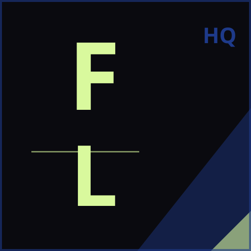
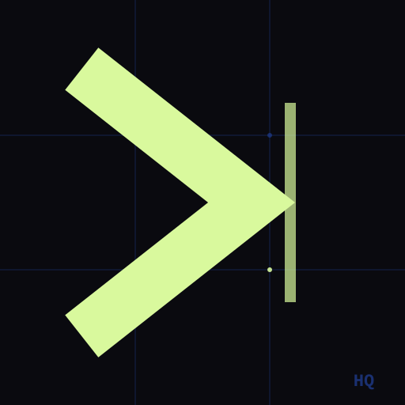

FieldLogicHQ — Logo Concepts
A — HQ Lettermark
Bold condensed "HQ" in logic-lime. Blueprint-blue border frame. Platform name in secondary blue. Most direct — communicates "headquarters" instantly.

B — FL Monogram + Triangle
Stacked "FL" (FieldLogic) with blueprint-blue diagonal structural element. More visual, sport-adjacent (triangle evokes a pennant). Less immediately legible at small sizes.

C — Logic Mark (Chevron)
A bold ">" in logic-lime on a blueprint data grid. Symbol-first — no letterform dependency. The chevron is both forward momentum and a programming/logic operator. The vertical bar evokes a cursor/terminal. Most distinctive and scalable; least literal.
Favicon — All Sizes
16px — tab
32px — bookmark
64px — taskbar
128px
on white bg
on light bg
Note on fonts (Concepts A + B): These SVGs load Barlow Condensed 900 from Google Fonts for browser preview.
If you're offline, they will fall back to Arial Narrow or Impact.
Once you pick a concept, the letterforms can be converted to paths for a fully self-contained SVG
(no font dependency), which is what should be placed at public/logo.png via the icon generation script.
Concept C (chevron) uses no fonts at all — pure geometry. It renders identically at every size, in every context.
The same mark is already used as the favicon.
To generate all PWA icons from a chosen concept, run:
node scripts/generate-pwa-icons.js public/brand/logo-A.svg (or B or C)